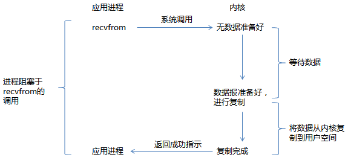
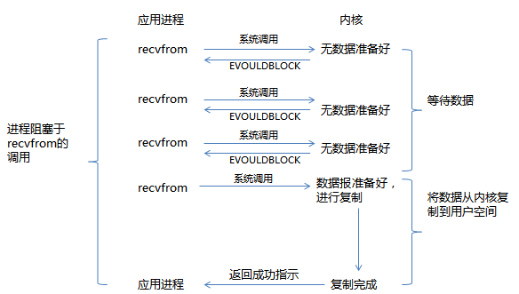
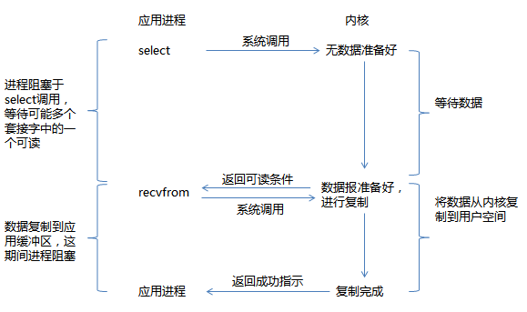
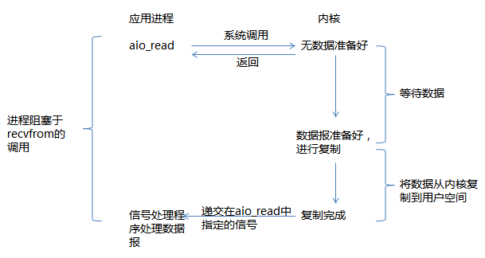
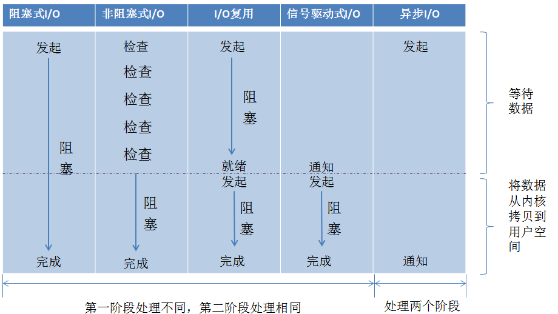

I/O模型的设计是后台服务能否支持高并发的至关因素。好的服务器性能必然需要良好的IO模型作为支撑。本篇重新复习下服务器常用的IO模型。
I/O操作根据设备的不同分为很多种，如内存I/O、网络I/O、磁盘I/O等。相对于后两种I/O操作，内存I/O速度已经足够快了。尽管可以用多进程等方式来充分利用空闲的CPU资源，但CPU资源毕竟有限，而且在遇到高并发情况时，CPU调度、服务器资源数将成为很大的限制。
我们希望花让CPU花费足够少的时间在I/O的调度上，而是花在对I/O的操作处理上。如何让高速的CPU和慢速的I/O设备更好的协调工作，也是现代计算机处理高并发、高可用的一个持续的技术话题。
网络IO的本质是socket的流操作，当一个read操作发生时，实际需要经历两个阶段：
- 等待数据就绪/准备（等待网络上的数据分组到达，然后被复制到内核的某个缓冲区）
- 将数据从内核拷贝到用户进程空间（将数据从内核缓冲区复制到用户进程缓冲区）
由于网络I/O存在上述两个阶段的时间等待，所以网络I/O的延时将是影响服务器性能的主要瓶颈。好的I/O模型也是至关重要的。 网络I/O模型大致分为以下几种：
- 同步阻塞I/O
- 同步非阻塞IO/
- 多路复用I/O
- 信号驱动式I/O
- 异步I/O
同步阻塞I/O
同步阻塞I/O是指当进程调用某些涉及IO操作的系统调用或库函数时，进程暂停，等待IO操作完成再继续运行。在调用recv()/recvfrom()这个系统调用，发生在内核中等待数据和复制数据过程如下： 
从上图看出，进程在I/O的两个阶段都被阻塞了。阻塞I/O在简单环境下较适用，如果没有其他事需要同时进行处理，阻塞I/O也不错。但是，如果存在多个连接的情况，则会引发问题。代码片段如下示例：
char buf[1024];
int i, n;
while (i_still_want_to_read()) {
for (i=0; i<n_sockets; ++i) {
n = recv(fd[i], buf, sizeof(buf), 0);
if (n==0)
handle_close(fd[i]);
else if (n<0)
handle_error(fd[i], errno);
else
handle_input(fd[i], buf, n);
}
}
即使fd[2]上最先有数据达到，对fd[0]和fd[1]的读取操作取得一些数据并且完成之前，程序不会试图从fd[2]进行读取。这就引起了累计的时延，影响整体的接收速度。
有时会用多进程或者多线程解决多个连接的问题。就是每个连接拥有独立的进程或者线程，这样一个连接上的I/O阻塞并不会影响其他任务连接的进程或线程。代码片段如下所示：
void child(int fd)
{
char outbuf[MAX_LINE+1];
size_t outbuf_used = 0;
ssize_t result;
while (1) {
result = recv(fd, outbuf,MAX_LINE, 0);
if (result == 0) {
break;
} else if (result == -1) {
perror("read");
break;
}
}
//use outbuf todo something
}
void run(void)
{
//do something init socket
while (1) {
struct sockaddr_storage ss;
socklen_t slen = sizeof(ss);
int fd = accept(listener, (struct sockaddr*)&ss, &slen);
if (fd < 0) {
perror("accept");
} else {
if (fork() == 0) {
child(fd);
exit(0);
}
}
}
}
为每个连接创建一个进程或者线程是否可行呢？ 如果作为服务器，连接数达到成千上万个，如此多的进程或者线程并不是明智的选择。
同步非阻塞I/O
同步非阻塞I/O的调用不会等待数据的就绪，如果数据不可读或可写，它会立即告诉进程。此时，read操作可能会返回一个错误代码，说明这个命令不能立即满足（EAGIN或EWOULDBLOCK）。流程如图所示：

与阻塞I/O不一样，”非阻塞将大的整片时间的阻塞分成N多个小阻塞，所以进程不断地被CPU调度“，该模式会消耗CPU, 且需要对每个连接描述符fd进行内核调用，不论连接上是否有数据。由于该模式会消耗大量CPU，所以极少情况使用。代码片段如下所示：
while (i_still_want_to_read()) {
for (i=0; i < n_sockets; ++i) {
n = recv(fd[i], buf, sizeof(buf), 0);
if (n == 0) {
handle_close(fd[i]);
} else if (n < 0) {
if (errno == EAGAIN)
; /* The kernel didn't have any data for us to read. */
else
handle_error(fd[i], errno);
} else {
handle_input(fd[i], buf, n);
}
}
}
多路复用(I/O multiplexing)
多路复用I/O，就是我们常说的select/poll/epoll， 它提供了对大量文件描述法就绪检查的高性能方案，它允许进程通过一种方法来同时监视所有文件描述符，并可以快速获得所有就绪的文件描述符，然后只针对这些文件描述符进行访问。优势就是同时可以监听多个fd。 流程如图所示:

当得知数据就绪后，就访问数据本身而言，仍然需要选择阻塞或非阻塞的访问方式（一般我们选择非阻塞方式，以防止任何意外的等待阻塞整个进程）。代码片段如下所示：
while (i_still_want_to_read()) {
int maxfd = -1;
FD_ZERO(&readset);
for (i=0; i < n_sockets; ++i) {
if (fd[i]>maxfd) maxfd = fd[i];
FD_SET(fd[i], &readset);
}
select(maxfd+1, &readset, NULL, NULL, NULL); //这里阻塞
for (i=0; i < n_sockets; ++i) {
if (FD_ISSET(fd[i], &readset)) {
n = recv(fd[i], buf, sizeof(buf), 0);
if (n == 0) {
//对端关闭套接字
handle_close(fd[i]);
} else if (n < 0) {
//数据传输完，内核没数据了
if (errno == EAGAIN)
; /* The kernel didn't have any data for us to read. */
else
handle_error(fd[i], errno);
} else {
handle_input(fd[i], buf, n);
}
}
}
}
在整个用户的进程中，进程是被select阻塞的，没有阻塞在真正的I/O系统调用（如recv/recvfrom）之上。从整个I/O执行过程来看，他们都是顺序执行的，因此可以归为同步模型（synchronous）,都是进程主动等待内核状态。
信号驱动式I/O
我们也可以用信号，让内核在描述符就绪时发送SIGIO信号通知我们，该模型即为信号驱动式I/O。

这种模型的优势在于等待数据报到达期间进程不被阻塞。主循环可以继续执行。只要等待来自信号处理函数的通知。
异步I/O
异步I/O模型，该模型工作机制是：告知内核启动某个操作，并让在整个操作（包括将数据从内核复制到我们自己的缓冲区）完成后通知我们。I/O的两个阶段，进程都是非阻塞的。
Linux提供了AIO库函数实现异步，但基本都是用开源的异步IO库，如libevent、libv、libuv。
从内核的角度看，当它接收到一个异步read之后，首先它会立即，对用户进程不会造成阻塞。然后内核会等待数据准备完成，然后将数据拷贝到用户内存，当这一切都完成之后，内核会给用户进程发送一个signal或执行一个基于线程的回调函数来完成这次IO处理过程。
五种I/O模型
同步I/O做I/O操作时将进程阻塞。 之前的阻塞I/O、非阻塞I/O、I/O复用、信号驱动I/O 都属于同步I/O(这里定义的I/O操作就是例子中recvfrom这个系统调用)。异步I/O则不一样，进程发起I/O操作后，就直接返回，直到内核发送一个信号，告诉进程说I/O完成。下图给出各种I/O的比较：

对于同步IO，都需要进程主动的调用 recvfrom来将数据拷贝到用户内存。而异步 I/O则完全不同。它就像是用户进程将整个IO操作交给了内核（kernel）完成，然后内核做完后发信号通知用户进程。
参考阅读
《 UNIX网络编程卷1 》：6.2节 I/O模型